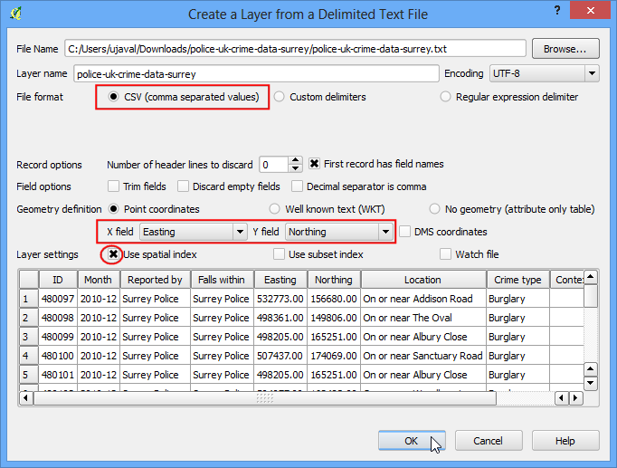
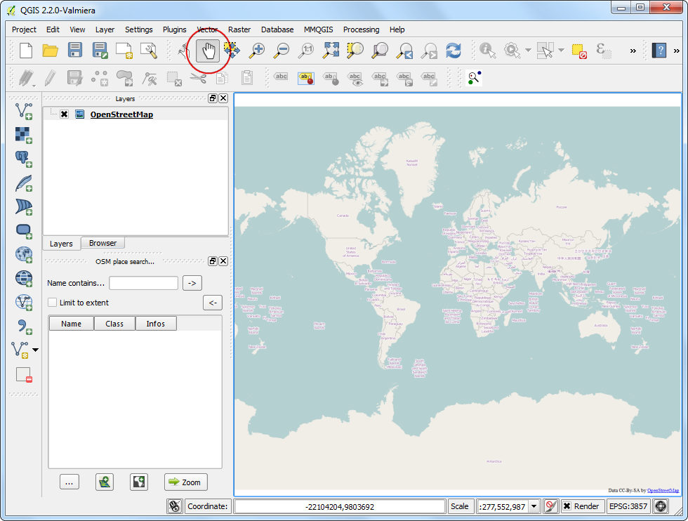
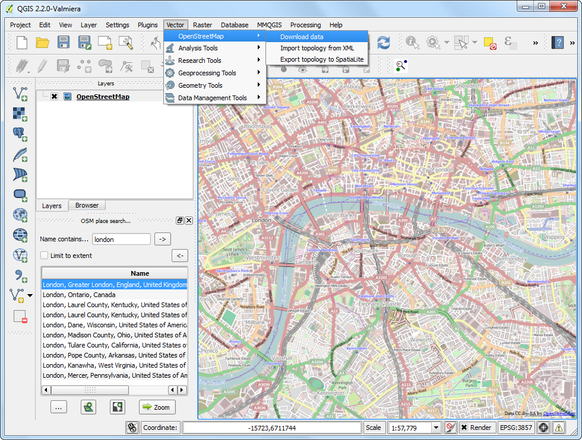
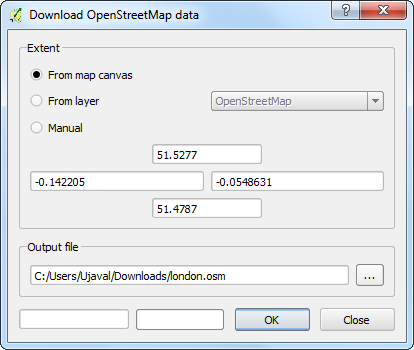
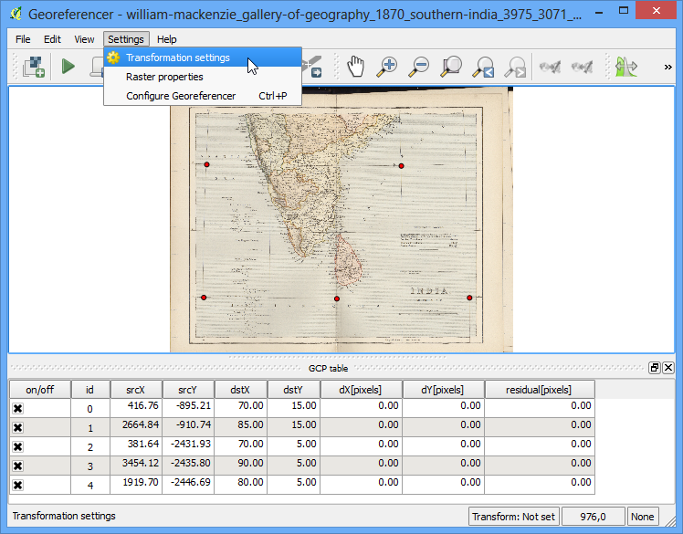
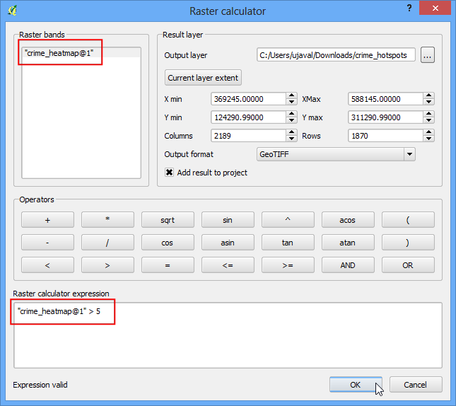
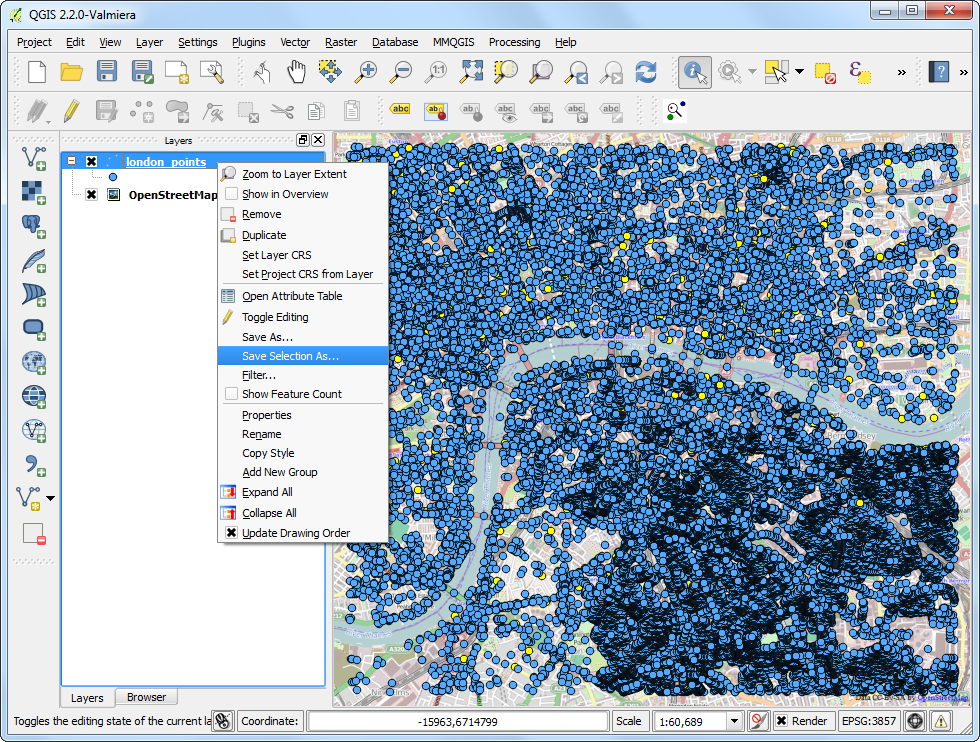

Georeferencing Topo Sheets and Scanned Maps¶
Most GIS projects require georeferencing some raster data. Georeferencing is the process of assigning real-world coordinates to each pixel of the raster. Many times these coordinates are obtained by doing field surveys - collecting coordinates with a GPS device for few easily identifiable features in the image or map. In some cases, where you are looking to digitize scanned maps, you can obtain the coordinates from the markings on the map image itself. Using these sample coordinates or GCPs ( Ground Control Points ), the image is warped and made to fit within the chosen coordinate system. In this tutorial I will discuss the concepts, strategies and tools within QGIS to achieve a high accuracy georeferencing.
Overview of the task¶
We will use a scanned map of southen India from 1870 and geo-reference it using QGIS.
Other skills you will learn¶
- How to determine datum and coordinate system for old maps.
Get the data¶
Hipkiss’s Scanned Old Maps website has an excellent collection out-of-copyright scanned maps that one can use for research.
Download the 1870 map of southern India and save it as a JPG image on your hard drive.
{kind=link}
Procedure¶
1.Georeferencing in QGIS is done via the ‘Georeferencer GDAL’ plugin. This is a core plugin - meaning it is already part of your QGIS installation. You just need to enable it. Go to Plugins ‣ Manage and Install Plugins and enable the Georeferencer GDAL plugin in the Installed tab. See Using Plugins for more details on how to work with plugins.

- The plugin is installed in the Raster menu. Click on Raster ‣ Georeferencer ‣ Georeferencer to open the plugin.

- The plugin window is divided into 2 sections. The top section where the raster will be displayed and the bottom section where a table showing your GCPs will appear.

- Now we will open our JPG image. Go to File ‣ Open Raster. Browse to the downloaded image of the scanned map and click Open.

- In the next screen, you will asked to choose the raster’s coordinate reference system (CRS). This is to specify the projection and datum of your control points. If you have collected the ground control points using a GPS device, you would have the WGS84 CRS. If you are geo-referencing a scanned map like this, you can obtain the CRS information from the map itself. Looking at our map image, the coordinates are in Lat/Long. There is no datum information given, so we have to assume an appropriate one. Since it is India and the map is quite old, we can bet the Everest 1830 datum would give us good results.

- You will see the image will be loaded on the top section.

- You can use the zoom/pan controls in the toolbar to learn more about the map.

- Now we need to assign coordinates to some points on this map. If you look closely, you will see coordinate grid with markings. Using this grid, you can determine the X and Y coordinates of the points where the grids intersect. Click on Add Point in the toolbar.

- In the pop-up window, enter the coordinates. Remember that X=longitude and Y=latitude. Click OK.

- You will notice the GCP table now has a row with details of your first GCP.

- Similarly, add at least 4 GCPs covering the entire image. The more points you have, the more accurate your image is registered to the target coordinates.

- Once you have enough points, go to Settings -> Transformation settings.

- In the Transformation settings dialog, choose the Transformation type as Thin Plate Spline. Name your output raster as 1870_southern_india_modified.tif. Choose EPSG:4326 as the target SRS so the resulting image is in a widely compatible datum. Make sure the Load in QGIS when done option is checked. CLick OK.

- Back in the Georeferencer window, go to File ‣ Start georeferencing. This will start the process of warping the image using the GCPs and creating the target raster.

- Once the process finishes, you will see the georeferenced layer loaded in QGIS.

- The georeferencing is now complete. But as always, it’s a good practice to always verify your work. How do we check if our georeferencing is accurate? In this case, load the country boundaries shapefile from a trusted source like the Natural Earth dataset and compare them. You will notice they match up pretty nicely. There is some error and it can be further improved by taking more control points, changing transformation parameters and trying a different datum.
